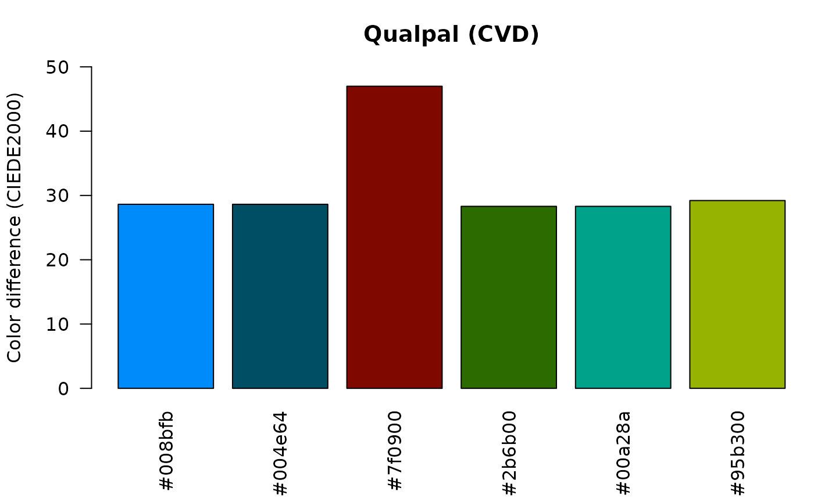

Background
Finding a good color palette for categorical data is a problem that has been tackled previously. In this vignette, we will compare the qualpal library with several alternatives, namely
iWantHue
iWantHue served as the main inspiration for the qualpal package. It is a web-based (Javascript) tool that allows users to generate color palettes for categorical data. Like qualpal, it generates a set of points. But unlike qualpal, it uses a -means clustering or force-vector algorithm to generate the final palette. It also only supports input in the LCHab color space.
To compare the two, we will start by generating a palette with iWantHue. I used the web interface, but the Javascript code to generate the palette is as follows (which the app gratefully provides):
var colors = paletteGenerator.generate(
5, // Colors
function(color){ // This function filters valid colors
var hcl = color.hcl();
return (hcl[0]>=50 || hcl[0]<=290)
&& hcl[1]>=0 && hcl[1]<=134
&& hcl[2]>=25 && hcl[2]<=85;
},
false, // Using Force Vector instead of k-Means
50, // Steps (quality)
false, // Ultra precision
'Default' // Color distance type (colorblindness)
);
// Sort colors by differenciation first
colors = paletteGenerator.diffSort(colors, 'Default');To compare the two, we now run qualpal() with same
input.
library(qualpalr)
hcl_space <- list(h = c(50, 290), c = c(0, 134), l = c(25, 85))
pal <- qualpal(n = 5, hcl_space)
pal## ----------------------------------------
## Colors in the HSL color space
##
## Hue Saturation Lightness
## #0081ff 210 1 0.50
## #771b00 14 1 0.23
## #005800 120 1 0.17
## #00ffb1 162 1 0.50
## #ffac6b 26 1 0.71
##
## ----------------------------------------
## DIN99d color difference distance matrix
##
## #0081ff #771b00 #005800 #00ffb1
## #771b00 31
## #005800 29 24
## #00ffb1 29 36 26
## #ffac6b 31 24 28 27Finally, to compare the two palettes, we can use the
analyze_palette() function from qualpalr,
which returns a list of analyses of the palettes, one for each type of
color vision deficiency (CVD), with a configurable severity.
I’ve hard-coded the iWantHue palette here, and will compare it to the qualpal palette we just generated. Here, we show the color difference values for the normal vision analysis.
iwanthue <- c(
"#5f683c",
"#5c87b5",
"#79bf4b",
"#c79041",
"#7bb99d"
)
analyze_palette(pal$hex, metric = "ciede2000")$normal## $difference_matrix
## #0081ff #771b00 #005800 #00ffb1
## #771b00 52.68595
## #005800 60.31118 52.20662
## #00ffb1 55.50559 84.64856 51.73998
## #ffac6b 52.85371 52.06510 59.63868 50.86874
##
## $min_distances
## #0081ff #771b00 #005800 #00ffb1 #ffac6b
## 52.68595 52.06510 51.73998 50.86874 50.86874
##
## $bg_min_distance
## [1] NaN
analyze_palette(iwanthue, metric = "ciede2000")$normal## $difference_matrix
## #5f683c #5c87b5 #79bf4b #c79041
## #5c87b5 40.29442
## #79bf4b 29.94464 50.43511
## #c79041 29.25577 42.50749 32.66864
## #7bb99d 29.76810 31.42995 17.49101 33.43658
##
## $min_distances
## #5f683c #5c87b5 #79bf4b #c79041 #7bb99d
## 29.25577 31.42995 17.49101 29.25577 17.49101
##
## $bg_min_distance
## [1] NaNThe result shows a matrix of color differences for each color in the palette, as well as a vector of the minimum color difference for each color in the palette and a color difference with respect to the background (if used, which we did not in this case).
For a better visual comparison, we can plot the color difference values for each color in the palette.1
As you can see, qualpal produces a palette that’s much more distinct, with higher color difference values across the board.
Like qualpal, iWantHue also supports some adaptation for Color Vision Deficiency (CVD), but much less granular than qualpal. In fact I’m not sure how it works or what kind of CVD adaptation it supports.
Colorgorical
Colorgorical is a web-based tool for generating color palettes for categorical data. It uses an iterative method with random sampling to incrementally build the palette. The algorithm is described in the paper by Gramazio, Laidlaw, and Schloss (2016).
It’s based on Python under the hood and the code is available on GitHub. The web app is, at the time of writing, down, but is otherwise accessible via a link on https://gramaz.io/colorgorical/. Prior to it going down, however, I generated a palette using the same HCL color space as for the iWantHue example above. By default, Colorgorical also tries to maximize the name difference of the colors, but I have turned that off for the sake of this comparison. The resulting palette is as follows:
colorgorical <- c("#b4ddd4", "#9b233d", "#2eece6", "#f82387", "#32a190")
Colorgorical vs Qualpal
Colorgorical vs Qualpal
As before, we see that the qualpal palette is considerably more distinct.
Glasbey
Glasbey is a python library for generating color palettes for categorical data. It is based on academic work by Glasbey et al. (2007) and uses simulated annealing and the CIE76 metric to compute color differences. Here we used a slightly modified version of the colorspace above to generate a palette with 8 colors.
import glasbey
pal = glasbey.create_palette(
palette_size=8,
hue_bounds=(-90, 90),
chroma_bounds=(50, 100),
lightness_bounds=(30, 70),
)The resulting palette as well as the palette generated by qualpal are as follows:
glasbey <- c(
"#b20000",
"#caa200",
"#ff8ab2",
"#aa145d",
"#9e5d00",
"#ff7910",
"#ff008a",
"#ca5d55"
)
pal2 <- qualpal(8, list(h = c(-90, 90), c = c(50, 100), l = c(30, 70)))One option that’s shared by both qualpal and Glasbey is the possibility to extend an existing palette with more colors. Glasbey has a function for this, which we can use to extend a palette taken from the Glasbey documentation.
base_pal = ["#2a3e63", "#7088b8", "#fcaf3e", "#b87088"]
pal_extend = glasbey.extend_palette(
base_pal,
palette_size=8,
hue_bounds=(50,280),
chroma_bounds=(50, 80),
lightness_bounds=(25, 70),
)To do this in qualpal, we can use the extend argument to
qualpal(), which will extend the base palette.
glasbey_extend <- c(
"#2a3e63",
"#7088b8",
"#fcaf3e",
"#b87088",
"#417108",
"#45dfa6",
"#6d0c49",
"#dfaaff"
)
base_pal <- c(
"#2a3e63",
"#7088b8",
"#fcaf3e",
"#b87088"
)
pal_extend <- qualpal(
8,
list(h = c(50, 280), c = c(50, 80), l = c(25, 70)),
extend = base_pal
)Both palettes are quite distinct, but the qualpal palette keeps a better color difference across the board.
As in qualpal, glasbey also supports some adaptation for Color Vision Deficiency (CVD). Unlike qualpal, however, it only supports adaptation for a single type of CVD at a time, but also supports a severity parameter to control the strength of the adaptation.
We generated a palette with 6 colors, adapted for protanomaly with a severity of 100% (the maximum), using the following code:
cvd_pal = glasbey.create_palette(
palette_size=6,
colorblind_safe=True,
cvd_type="protanomaly",
cvd_severity=100,
hue_bounds=(50,280),
chroma_bounds=(50, 80),
lightness_bounds=(25, 70),
)The resulting palette and the qualpal palette is given below.
glasbey_cvd <- c(
"#512deb",
"#317d00",
"#92d200",
"#39ceff",
"#00ba92",
"#0082b2"
)
cvd_pal <- qualpal(
6,
list(h = c(50, 280), c = c(50, 80), l = c(25, 70)),
cvd = c(protan = 1)
)
Distinctipy
Distinctipy is another python library for generating color palettes for categorical data. It randomly samples colors from the RGB color space and then computes pairwise color differences with the CIE76 metric, repeats this for a set number of attempts, and then picks the best palette among the attempts.
I ran the following code to generate a 9-color palette with the default settings, included colors from all over the spectrum.2 There are no options other than a pastel color setting for changing this.
import distinctipy
dpal = distinctipy.get_colors(9, rng = 0, n_attempts=1000)
[distinctipy.get_hex(c) for c in dpal]
distinctipy <- c(
"#cf02fd",
"#00ff00",
"#ff8000",
"#01aced",
"#0905c3",
"#538337",
"#80ff80",
"#a80549",
"#b28cd2"
)
pal3 <- qualpal(9, list(h = c(0, 360), s = c(0, 1), l = c(0, 1)))
We see that qualpal produces a more distinct palette and that the palette from distinctipy is quite uneven, with two colors being very similar to each other.
Palettailor
Palettailor is another web-based tool for generating color palettes for categorical data. It is based on academic work by Lu et al. (2021) and, like Glasbey, it uses a simulated annealing approach, albeit with the CIEDE2000 metric instead.
Compared to qualpal and the other alternatives here, it takes a different approach to generating color palettes. It optimizes the color palette for a specific plot design by trying to maximize the distinctiveness of the colors that are close to each other in the plot.For that reason, the comparisons here are not entirely fair, but if we turn off optimizations for name difference and point distinctiveness (in the web app), we can still compare the generated palette with qualpal.
Here is the result from the Palettailor web app, using a 10-color
palette with the color space defined in the hcl_space
object. Palettailor does not support controls for saturation, so we use
the full range in qualpal to facilitate the comparison. Palettailor also
forces optimization with a background color in mind, although choices
are restricted to either white or black, so we set the bg
argument to "white" in qualpal here.
palettailor <- c(
"#4ca600",
"#5dfbbf",
"#eda59f",
"#32998d",
"#605ec4",
"#0099ef",
"#e950e8",
"#e1f32e",
"#936411",
"#e9003e"
)
hsl_space <- list(h = c(0, 360), s = c(0, 1), l = c(0.45, 0.95))
pal3 <- qualpal(10, hsl_space, bg = "white")We again see that qualpal produces a more distinct palette, but this time the difference is not as pronounced as with the other alternatives.